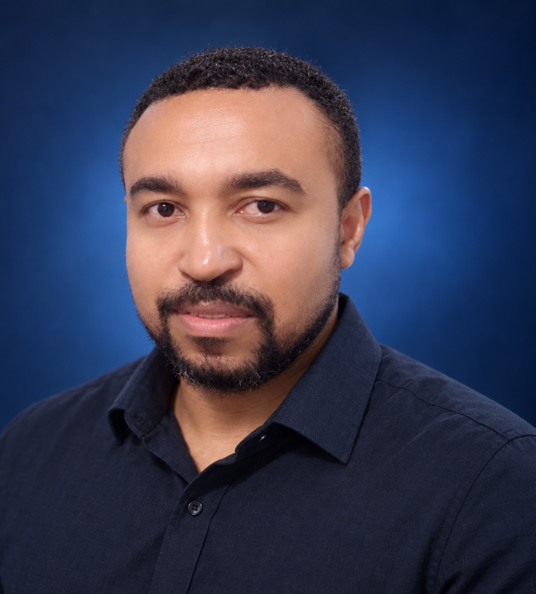

01 / QA AUTOMATION
Sentinel QA IA
Iniciativa de automação BDD para e-commerce, com fluxos de negócio, evidências, governança de resultados e validação de APIs orientada pela qualidade.
Sou Edson Gomes, Senior SQA Analyst na C&A Brasil, com mais de 5 anos em Quality Engineering, automação e estratégia de testes para produtos digitais.

Atuo do refinamento e análise de riscos à automação, evidências e evolução contÃnua da qualidade.
Meu foco é prevenir problemas antes que cheguem ao cliente. Na C&A, atuo em jornadas de e-commerce, conectando estratégia de testes, BDD, testes funcionais e não funcionais, APIs e colaboração com produto e desenvolvimento. Também sou mentor na CodeFlow desde 2022 e desenvolvo produtos próprios — uma visão que fortalece a qualidade desde a arquitetura.
Projetos que unem automação, estratégia de QA, educação e desenvolvimento de produtos.
Iniciativa de automação BDD para e-commerce, com fluxos de negócio, evidências, governança de resultados e validação de APIs orientada pela qualidade.
Desde 2022, compartilho prática de QA, automação, desenvolvimento, APIs e IA em uma mentoria orientada por projetos e desafios do mercado.
Produto de gestão de pedidos para restaurantes, com fluxo operacional, painel de cozinha e arquitetura preparada para múltiplos estabelecimentos.
Trajetória em engenharia de qualidade para e-commerce, logÃstica, serviços financeiros e mentoria técnica.
Atuação em e-commerce, cerimônias Scrum, refinamento, análise de riscos e estratégia baseada na pirâmide de testes. Execução funcional, não funcional, regressiva, manual e automatizada; BDD/Gherkin, gestão de defeitos, massas, evidências, Azure DevOps e abertura de GMUDs.
Automação de UI e APIs em JavaScript com Playwright e Page Objects; Postman, SuperTest, Swagger e WSDL. Planejamento de massa de testes, automação mobile com Appium e BrowserStack e performance com Locust.
Automação de UI e APIs em ambiente bancário: Selenium WebDriver, JUnit, Cucumber, Java e Page Objects; Postman, SOAP UI, RestAssured, Swagger e WSDL. Testes funcionais, regressivos, integração e mobile.
Participação em cerimônias ágeis, levantamento de cenários, testes manuais e automatizados, BDD/Gherkin, gestão de bugs no Jira, manutenção de massa de testes, Git/GitHub e evidências de qualidade.
Mentoria prática em QA, automação, desenvolvimento, APIs e IA, conectando pessoas a ferramentas, projetos e desafios reais de tecnologia.
Uma carreira construÃda pela prática e sustentada por formação em tecnologia e segurança.
Pós-graduação em Cibersegurança.
Graduação em Análise e Desenvolvimento de Sistemas.
DisponÃvel para oportunidades em QA Sênior, SDET e Quality Engineering.